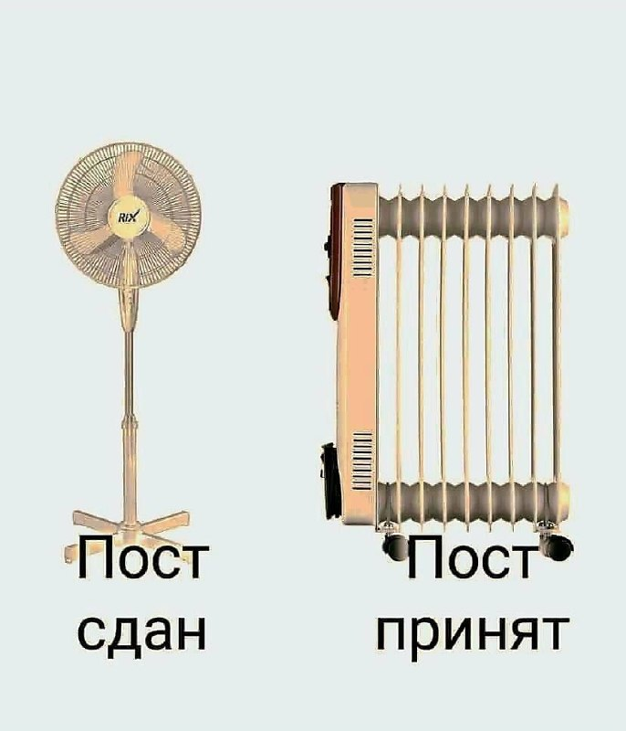
01
Общество и городская среда · событие дня

Ульяновская вокалистка Софья Иншакова стала участником музыкально-театрального реалити «Классный мюзикл».
Индекс рассчитывается, исходя из тактико-технических действий игроков в зависимости от позиции, и отражает качество их игры в конкретном матче.
Это ненормально. Депутат Госдумы от «Новых людей» Ксения Горячева вместе с женщинами со всей страны создала Манифест женщин России. Его поддержало уже более 700.000 человек, а ты?…
Это станет нашим общим ответом тем, кто хочет ослабить Россию, сдержать её развитие, лишить нас суверенитета и права самостоятельно определять свою судьбу, – отметил, в частности, Президент.…

Возникает вопрос: "депутаты Городская Дума Димитровграда в курсе, что ранее в Генеральном плане города предусмотрен земельный участок на улице Кутузова, 1, на строительство школы?…
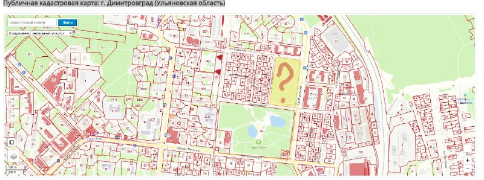
Но работа «в поле» так и осталась на бумаге.…
Теперь мэрия разрешила расширить параметры застройки участка площадью чуть более 11 соток — в том числе увеличить площадь здания за счет зеленой зоны и сократить нормативные отступы от границ участка и дорог.…
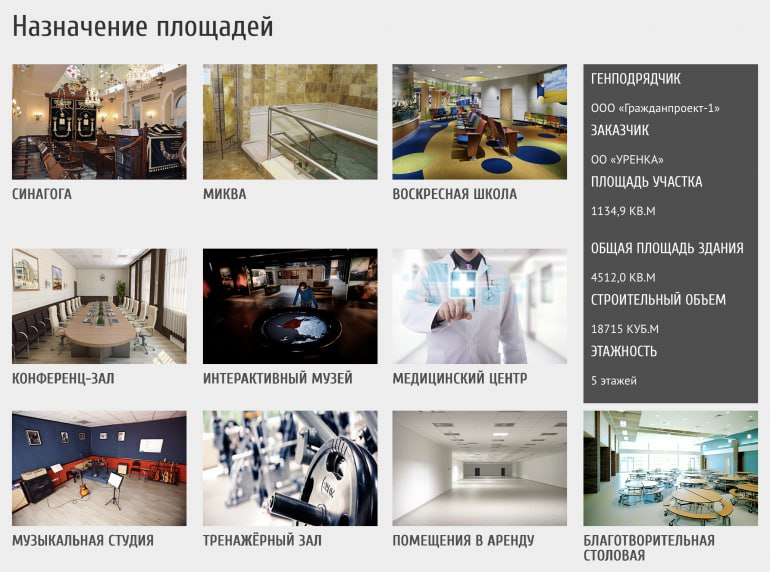

Президент России обратился к гражданам России в преддверии…
Чтобы быстро и удобно проголосовать, лучше заранее узнать, где находится ваш участок.…
Уверен, что в голосовании примут самое активное участие и наши солдаты, офицеры, которые сейчас ведут трудную боевую работу.…
Модель получила двигатель на 657 л.с. и запас хода 900 км.
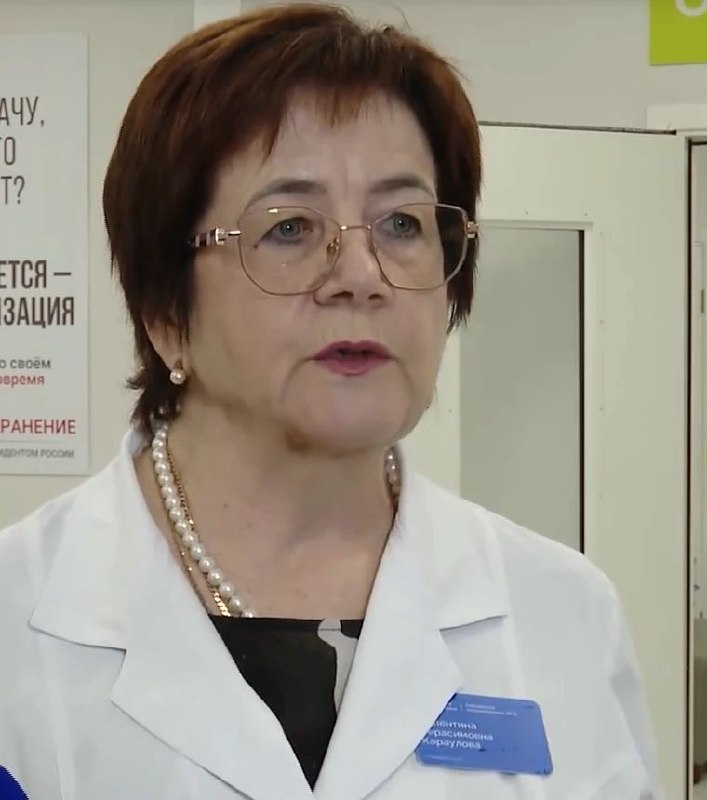
Немного о группе: In the Court of the Crimson King — дебютник — вышел в 1969 году и практически сразу стал одной из главных пластинок нового тогда прогрессивного рока.……
Болезнь Ауески — острая вирусная инфекция, которая поражает центральную нервную систему.…
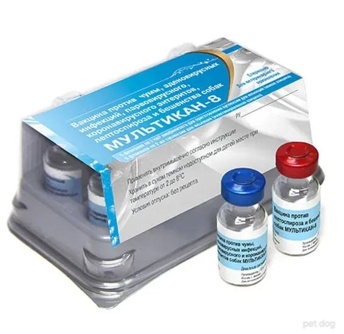
В 2027-м завод намерен собрать 200 тысяч машин, об этом сообщает БелТА.

Продукцию экспортируют 45 предприятий, а лидером является «Жировой комбинат» с долей 37,3% в общем объёме уральского экспорта АПК.…

🔹 В России зарегистрировали первый промышленный SLS 3D-принтер Московское предприятие «Онсинт» внесло свой промышленный SLS 3D-принтер в Государственную информационную систему промышленности.…


Завтра будет дороже. Послезавтра — ещё дороже.…

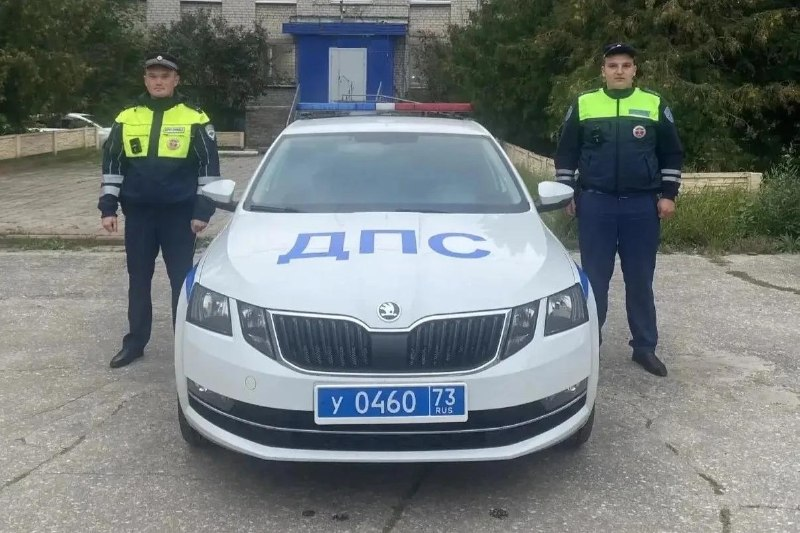
Доктор медицинских наук, профессор, врач аллерголог-иммунолог Александр Черданцев подчёркивает: профилактику аллергии у ребёнка нужно начинать ещё в утробе матери.…
По словам собачников, российскую вакцину им рекомендовали ветеринары.…

Клапан вводят через прокол в бедренной артерии, без разреза груди и долгого восстановления.…
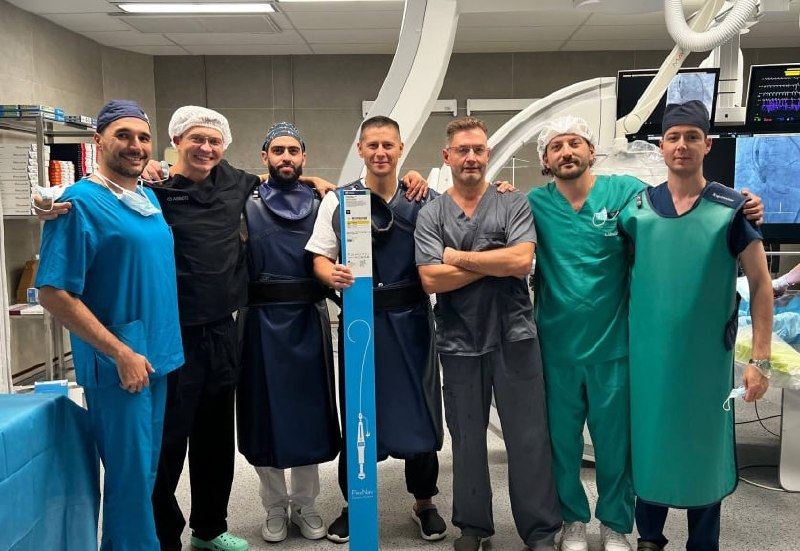
Теперь парню светит статья 111 УК РФ — умышленное причинение тяжкого вреда здоровью. 👍 — поделом ему!…

Оригинальный препарат «Форсига» для терапии сахарного диабета второго типа и сердечной недостаточности защищен евразийским патентом AstraZeneca до 2028 года.…
Полицейские пересадили её в патрульный автомобиль и с мигалками довезли до медиков.…

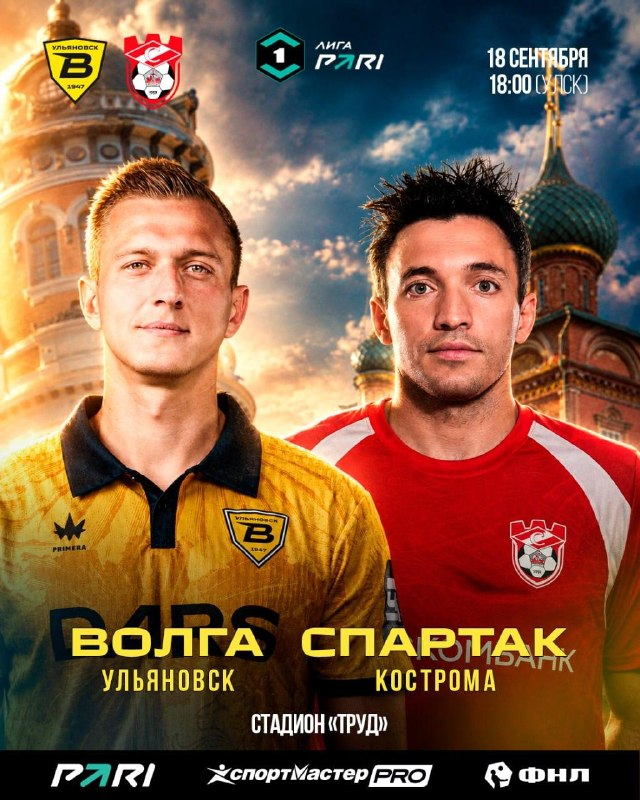
💙 📹 Прямая трансляция: http://tricolorsport.ru/channel/tv 💬 Текстовая трансляция: http://www.rusbandy.ru/game/29433/ До встречи на арене!…

Стартовый свисток на стадионе «Труд» прозвучит в 18:00.…

18 сентября ульяновскую «Волгу» ждет один из самых принципиальных и сложных домашних матчей текущего отрезка чемпионата.…

Награду вручил главный арбитр КХЛ Алексей Анисимов.…

В первой игре «Волга» уступила московскому «Динамо» со счётом 2:6.…


Индекс рассчитывается, исходя из тактико-технических действий игроков в зависимости от позиции, и отражает качество их игры в конкретном матче.…


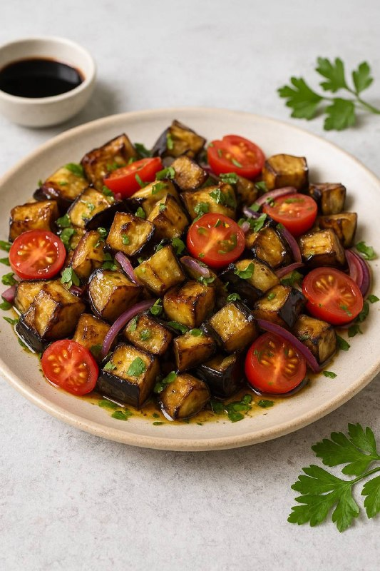
• Бальзамический уксус — 1 ст. л. • Зелень (петрушка или кинза) — небольшой пучок • Соль, перец — по вкусу Как готовить: 1. Баклажаны нарезать кубиками, слегка посолить и оставить на 10 минут, чтобы ушла горечь. 2.…
Производителя оштрафовали на 300 тысяч рублей, а суд отклонил попытку компании оспорить изъятие.…
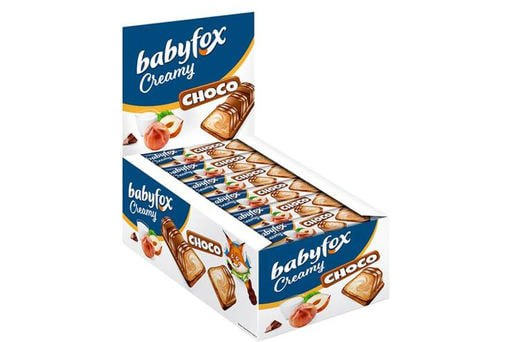
У семьи также пытались выманить «госпошлину». Данная схема часто применялась только в Европе, теперь запущена и в России.…
Сначала Светлана Бажина искала выход из сложившейся ситуации самостоятельно, но, потерпев неудачу, обратилась в надзорное ведомство .…
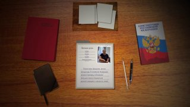
В селе Соловчиха Радищевского района 50-летняя женщина пришла к соседке и поссорилась с ней у дома.…

Правда, экс-сотрудником он стал за пару дней до возбуждения уголовного дела. Продолжается чистка региона. Наблюдаем.…
Особое внимание уделили тем, кто только готовится связать свою жизнь с лесоохранным делом, — юным экологам.…

Ранее за подобное нарушение можно было отделаться административным штрафом, но теперь следственный комитет массово возбуждает уголовные дела по статье 151.2 УК РФ — за вовлечение несовершеннолетних в опасные для жизни действия.……
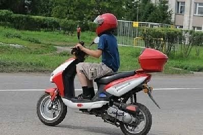
В Базарносызганском районе задержан местный житель, хранивший дома ружьё, 33 патрона и 149 граммов пороха.…

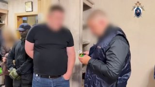
Ранее владельцы животных жаловались на ухудшение состояния питомцев после вакцинации.

После чего подавать на банкротство. Но псевдоюристов-наставников разоблачили силовики. Материал Антона Шестакова. Вести.…
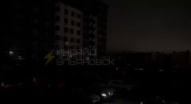
Во времена всеобщей лжи говорить правду — это экстремизм В Ульяновске начался процесс по делу автоинсценировщиков — одному из самых масштабных в истории российского уголовного права: 30 человек обвиняются в особо крупном мошенничестве в сфере страхования, а также в создании организованного преступного сообщества (ОПС) и участии в нем.…
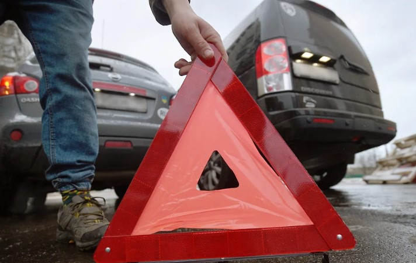
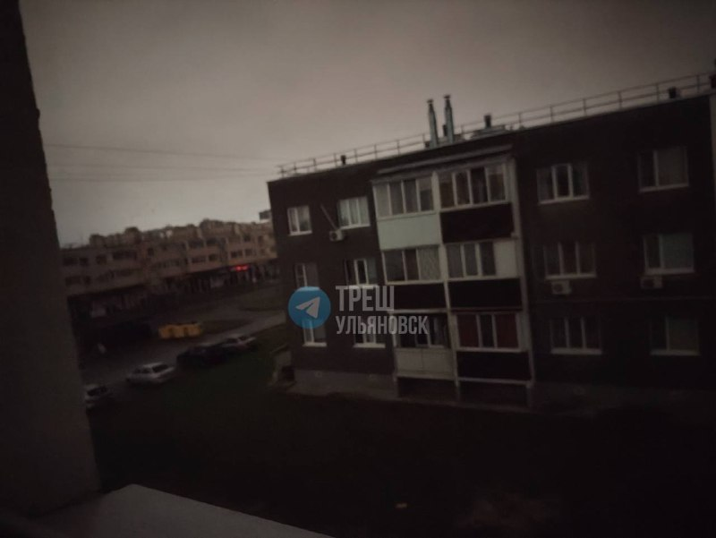
В районе Зайцева посёлка уже уложили асфальт на двух участках: на Камской от Рабочей до переулка Енисейского и на Рабочей от Парадизова до переулка Енисейского.…
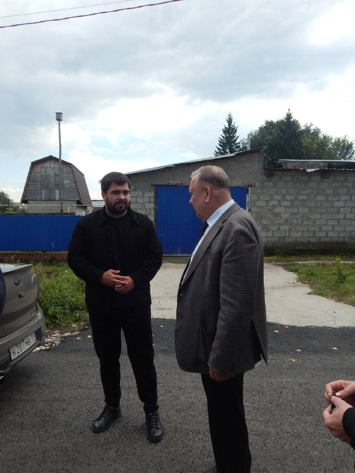
Это ремонт кровель, фасадов, систем отопления и водоотведения, лифтового оборудования, электрики. Уже есть план и на 2027 год.…
В ближайшие недели тюльпаны посадят на семи цветниках — весной они расцветут на 720 кв. м.…
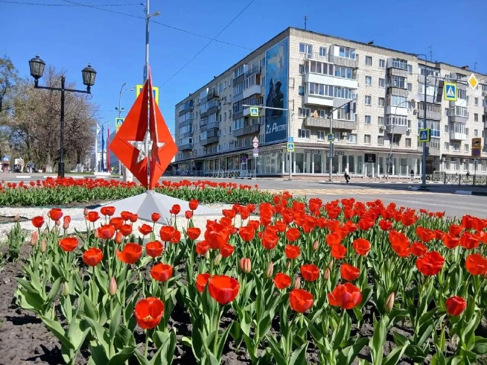
Пенсионеров жаль, особенно инвалидов», — пишет наша подписчица.…
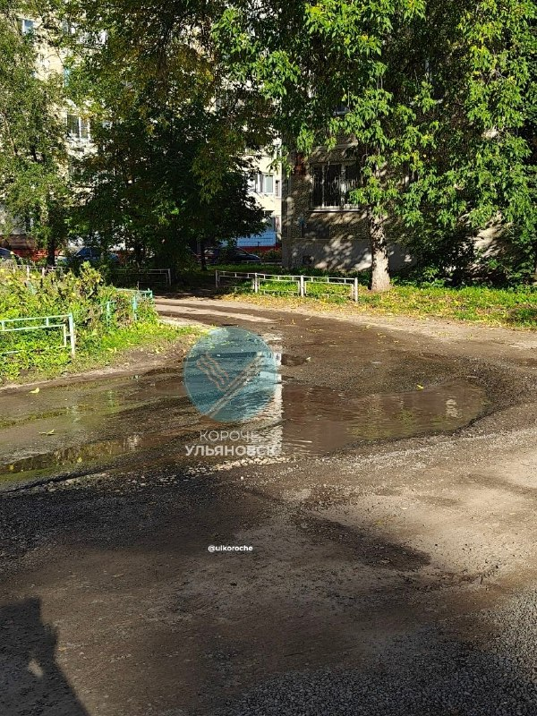
Справки: 8(929)999-43-09 Категория 0+ Билеты: http://vk.cc/d0L3sV?erid=CQH36pWzJqVJ6bj64WNobRUWnnLdLwYNNBiS1pYNEUAnhA 📍 Стадион «Старт» и Картхолл (Наличный расчет) Реклама.…
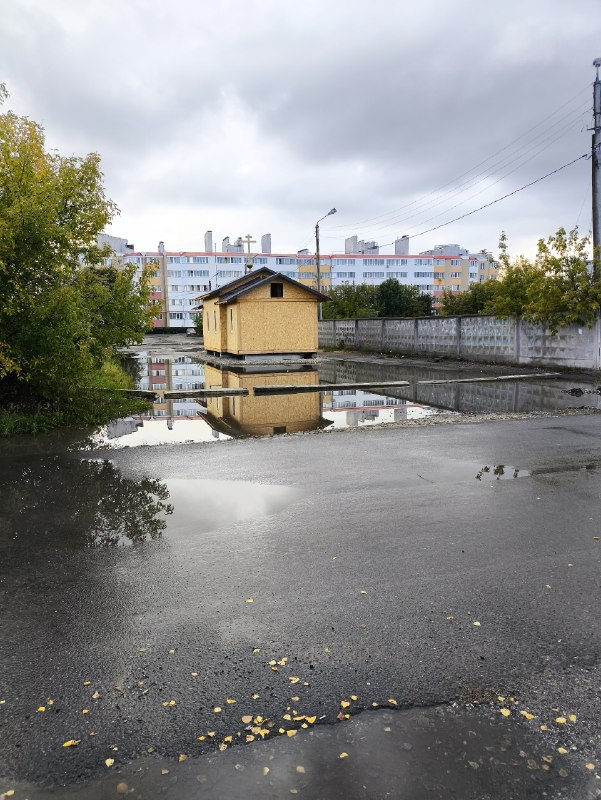
Если ничего не менять, может быть только хуже: затяжки со сроками, удорожание работ, повреждение фундамента.
Софья попала в команду Теоны Дольниковой, звезды мюзиклов «Метро» и «Нотр-дам де Пари».…

Мне приснилось, что я хожу по галерее среди своих картин, которых в реальности еще даже не написал.…
На базе центра организуют и проводят лекции, мастер-классы и лабораторные практикумы.…

В лицее №25 питание организует ярославский «Комбинат социального питания». Сейчас горячие обеды там получают 72% учеников.…
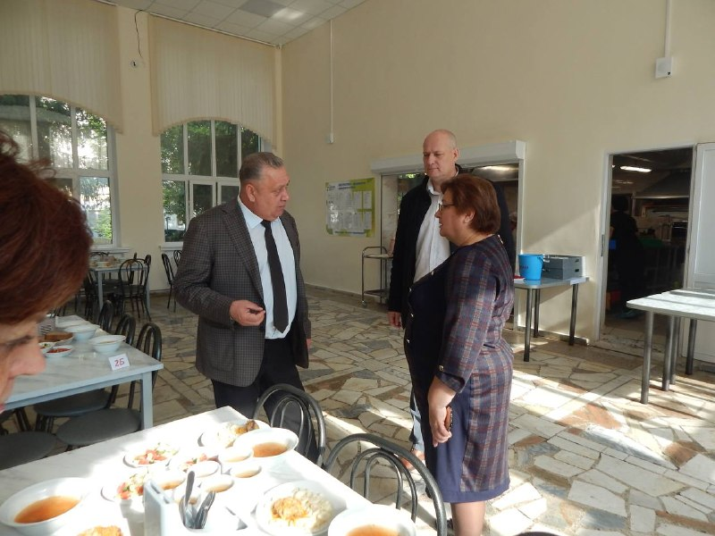
С 9 по 13 сентября гонка прошла по маршруту Челябинск — Магнитогорск — Миасс.…

Как предупреждает местный адвокат Виктория Антипова, самого факта покупки мопеда ребенку уже достаточно для привлечения к уголовной ответственности.…
🅿️ Минтранс РФ представил новый дорожный знак парковки для многодетных семей. 🎭 В Ульяновске стартовал III Международный театральный фестиваль «Вместе».…
Если кто-то сможет ему помочь, будем очень благодарны. Он находится по ул. Пушкина дом 142.
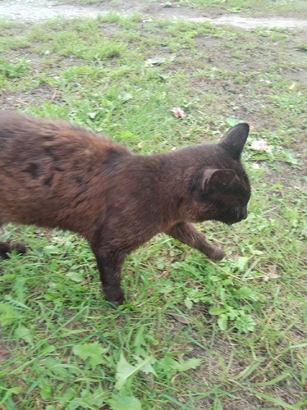
19 сентября встречу проведёт Магелон — француженка и путешественница , которая много лет исследует страны через людей, культуру и повседневную жизнь.……
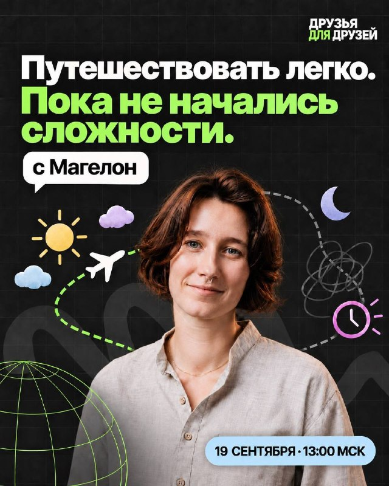
Все подробности в одном из ближайших выпусков «Реальности».…

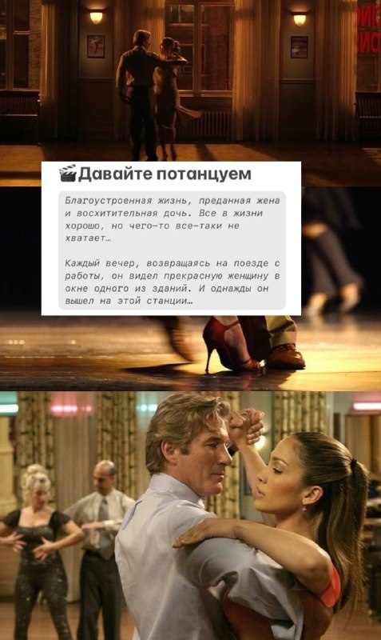
Если министр искусства и культурной политики региона Евгения Сидорова сочтет награду неуместной и ответит отказом, госслужащему придется официально вернуть подарок иностранцам.…
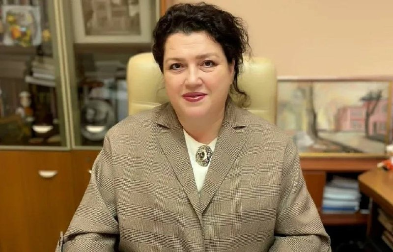
Ульяновская вокалистка Софья Иншакова стала участником музыкально-театрального реалити «Классный мюзикл».

Ульяновская певица Софья Иншакова вошла в число 20 участников федерального музыкально-театрального реалити «Классный мюзикл», которое с 7 сентября выходит на платформе ОК.…

Как только будет сформирован штат, то Центр снова откроет свои двери, — пояснили ситуацию во Дворце книги. Может, кто ищет работу?
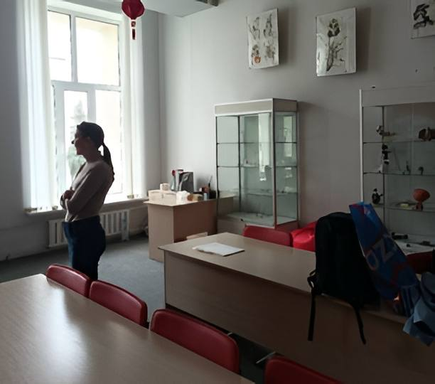
| Тема | Завтра | Ожидание | Уверенность |
|---|---|---|---|
| Выборы-2026 | ↑ рост | ~51.2 упоминаний | средняя |
| Транспорт и дороги | ↑ рост | ~52.9 упоминаний | средняя |
| День города (378 лет) | ↓ спад | ~0.0 упоминаний | средняя |
| Суды и криминал | ↑ рост | ~50.1 упоминаний | средняя |
| Губернатор / власть | ↑ рост | ~38.6 упоминаний | средняя |
| БПЛА и воздушные угрозы | ↓ спад | ~0.7 упоминаний | средняя |